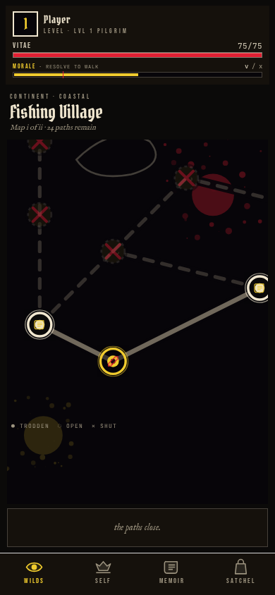
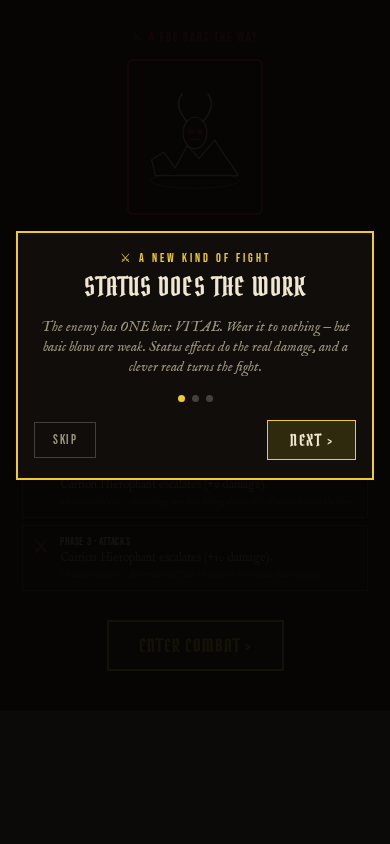
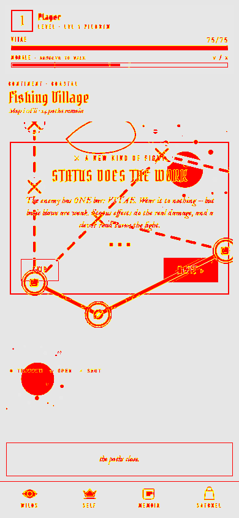

2026-07-04
Seed entry — delete once the first real nightly digest lands. Shows every card type so you can preview the layout.
Loot-cache 'prober' policy renamed to 'informed'
What Renamed the loot-cache policy prober to informed across the engine and added ADR-0008 recording the decision.
Why "prober" leaked an implementation word into the doctrine vocabulary; "informed" sits cleanly on the informed > blind > coward gradient players actually reason about.
16e1386
Combat board spacing + reveal
What Tightened the combat board's hit-zone spacing and softened the card-reveal timing on phone widths.
Why The critic pass flagged cramped tap targets and a reveal that read as a flicker under 400px.
combat-encounter — before/after of the board at 390×844


DevLog pipeline
What The nightly digest now emits a structured entry rendered into this visual page — categorized work-item cards, code diffs, and UI before/after shots.
Why The old digest read like rendered markdown; it couldn't show what changed visually or why a mechanics change was made.
c20cc91
While you were out
| Tick | Verb | Outcome |
|---|---|---|
| 03:02 | march | no-op (queues clean) |
| 03:14 | iterate | shipped: devlog pipeline |
| 03:20 | digest | this entry |
Needs you
- Stand up Cloudflare Pages + Access so this renders on your phone (see
devlog/README.md).
Tuning proposals
None.